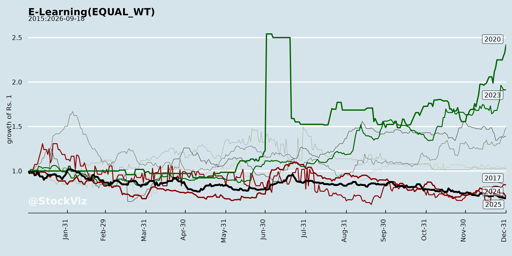
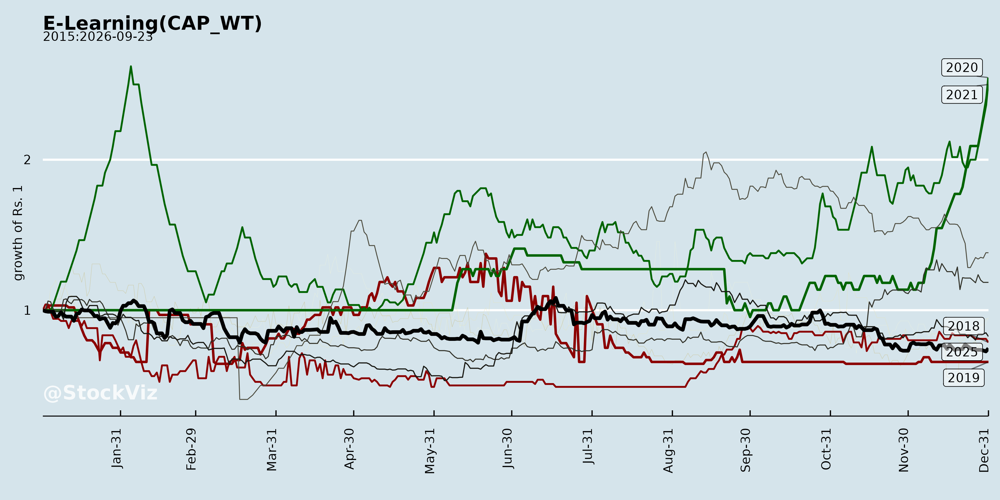
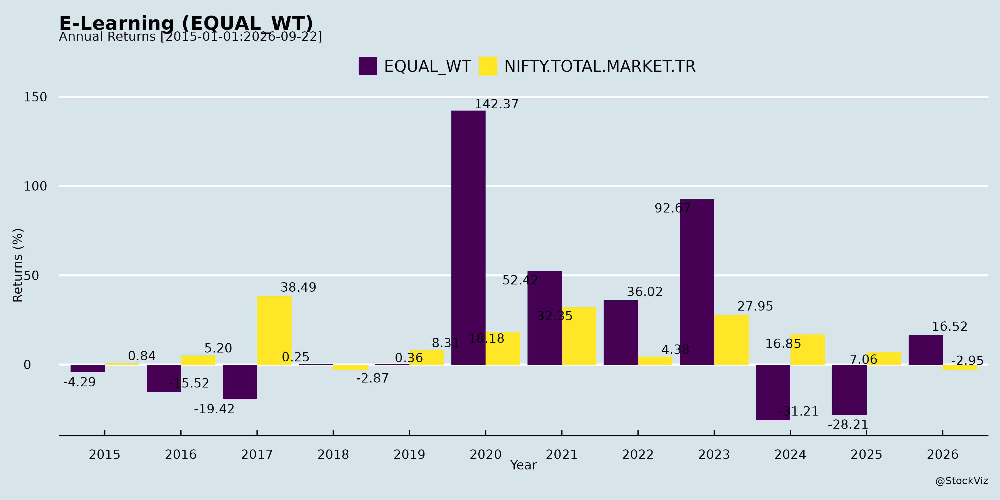
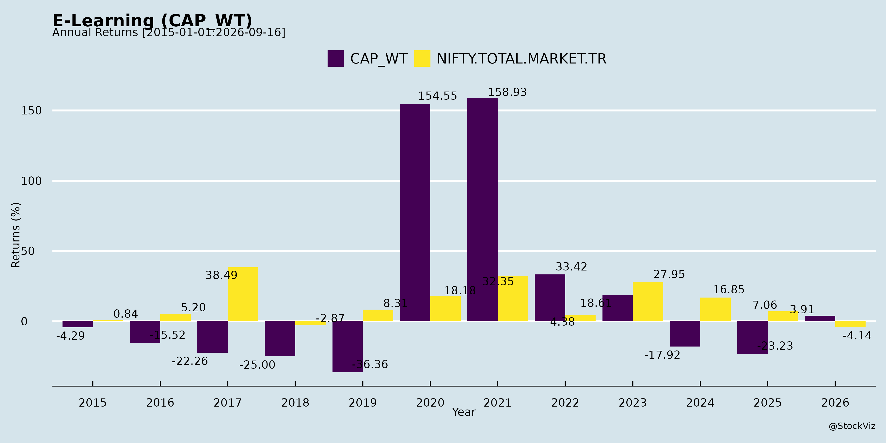
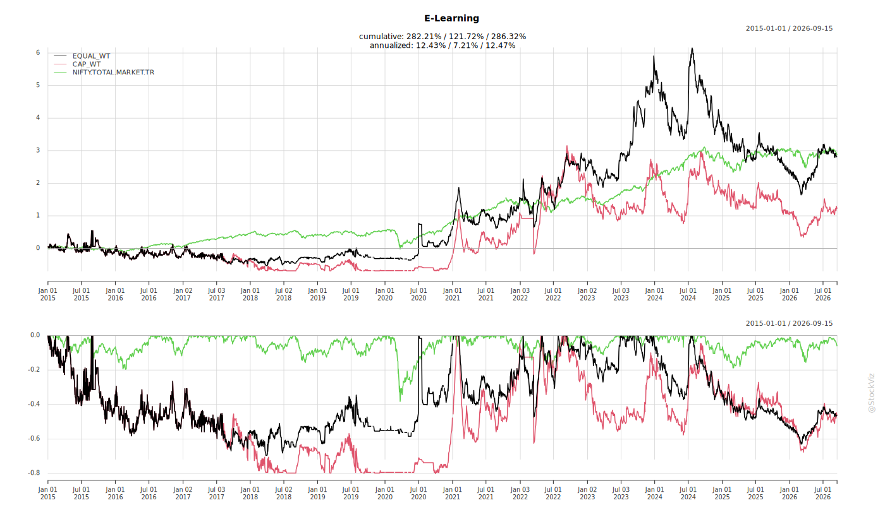
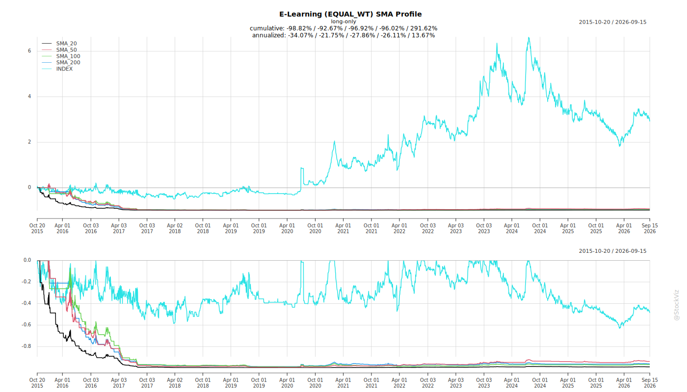
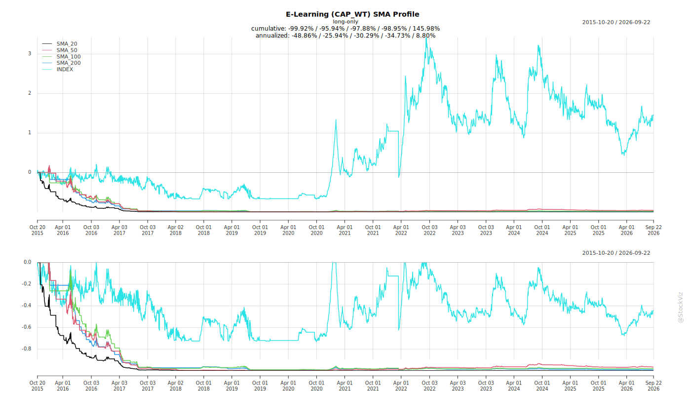
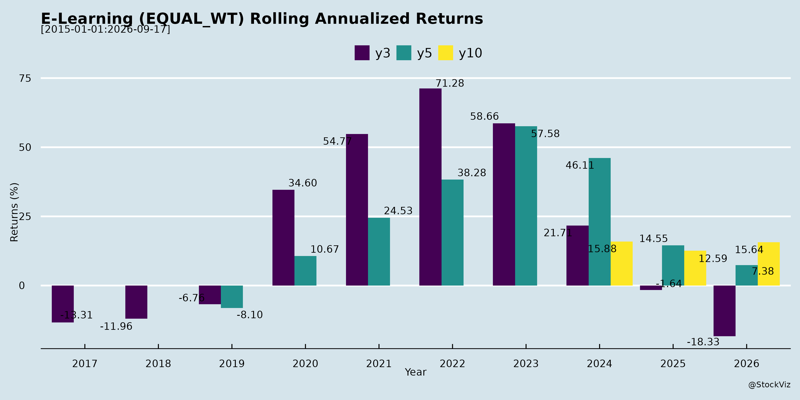
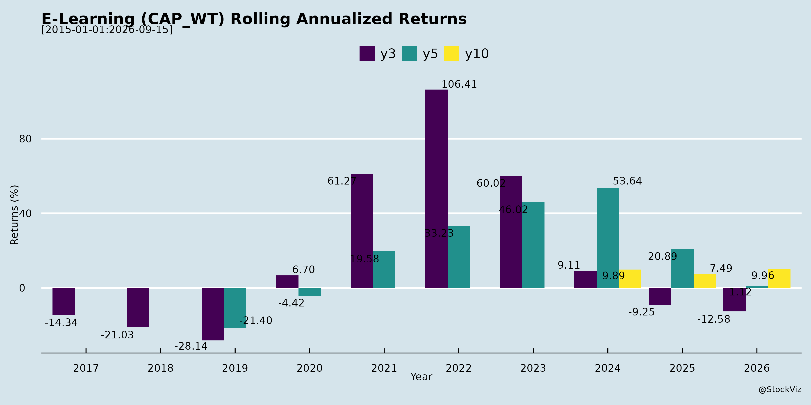

asof: 2025-11-27
Summary Analysis: Indian E-Learning Sector (Insights from Jaro Education, MPS Limited, and Veranda Learning Solutions)
Using the provided documents (analyst meeting intimation from Jaro Education, Q2/H1 FY26 earnings transcripts from MPS Limited and Veranda Learning Solutions), this analysis focuses on key players in India’s e-learning ecosystem, spanning test prep (commerce/govt exams), K-12/academics, higher ed, research/education services, and corporate learning. These firms highlight sector dynamics amid digital transformation, AI adoption, and test prep demand. Overall, the sector shows resilient growth (9-20% YoY revenue), margin expansion (via AI/operational leverage), and strategic restructuring, but faces segment-specific softness.
Tailwinds
Headwinds
Growth Prospects
Key Risks
Overall Outlook: Bullish with tailwinds from AI/digital demand outweighing headwinds. Sector poised for 20%+ growth via restructuring/acquisitions, but monitor execution (demergers, integrations) and debt deleveraging. Debt-free profiles (post-Veranda QIP) enhance resilience.
asof: 2025-11-27
Summary Analysis: Indian E-Learning Sector (Based on Provided Filings)
The provided documents from listed players—MPS Limited (strong performer), Veranda Learning Solutions Limited (struggling), G-TEC JAINX Education Limited, and Usha Martin Education & Solutions Limited—offer a mixed but insightful view of the Indian E-Learning sector as of Q3 FY25 (ended Dec 31, 2024). MPS exemplifies growth through diversification and acquisitions, while Veranda highlights execution challenges. Below is a structured analysis of headwinds, tailwinds, growth prospects, and key risks.
Tailwinds (Supportive Factors)
Headwinds (Challenges)
Growth Prospects
Key Risks
| Risk Category | Description | Examples from Filings |
|---|---|---|
| Financial | High leverage (Veranda: ₹477 Cr debt, current liabilities > assets); forex/interest rate volatility. | Veranda finance costs ₹96 Cr (9M); MPS low but acquisition-funded (₹30 Cr loan). |
| Operational/Execution | Acquisition impairments, contract renegotiations shortening asset lives. | Veranda: ₹101 Cr extra amort./₹22 Cr goodwill write-offs; SCLSPL BTA unwind. |
| Regulatory/Compliance | XBRL errors, RBI CIC/NBFC scrutiny for education-NBFC hybrids. | G-TEC/Usha re-filings; Veranda subs awaiting RBI nods. |
| Going Concern | Losses erode net worth; promoter dependency. | Veranda flags but asserts recoverability via plans/funding. |
| Market/Competition | Slow sub-ramp-up, ad dependency amid edtech funding winter. | Veranda ad spends ₹46 Cr; MPS unallocable expenses ₹26 Cr (9M). |
Overall Outlook: Bullish for efficient players like MPS (strong buy-and-build model), cautious for Veranda-like firms needing deleveraging. Sector growth hinges on cost discipline and regulatory navigation; expect 20-25% CAGR but with bifurcation—winners scale globally, laggards face consolidation. Investors should monitor Q4 debt metrics and acquisition ROIs.
asof: 2025-11-27
Summary Analysis of Indian E-Learning Sector (Based on Provided Documents)
The documents primarily cover financial results, AGMs, and announcements from education-focused listed companies (e.g., G-TEC JAINX Education, Usha Martin Education & Solutions, Veranda Learning Solutions). These provide insights into IT/ERP training, skill development, higher education, and ed-tech transitions. Usha Martin Education’s MD&A offers the most direct sector overview, highlighting NEP 2020, ed-tech potential ($700M to $30B in 10 years), and challenges like employability (only 10% of graduates job-ready). Financials show revenue growth amid losses (e.g., G-TEC Q1 FY26 revenue ₹231L consolidated, PAT ₹15L) and strategic shifts (Veranda divesting vocational for ed-tech stake). Below is a structured analysis of headwinds, tailwinds, growth prospects, and key risks.
Tailwinds (Positive Factors Driving Growth)
Headwinds (Challenges Impeding Progress)
Growth Prospects (Opportunities Ahead)
Key Risks (Potential Threats)
Overall Outlook: Strong tailwinds from policy/digital push outweigh headwinds, with $30B ed-tech opportunity. Growth hinges on employability focus/hybrids; monitor risks via profitability (e.g., G-TEC breakeven trajectory). Sector resilient, poised for 40%+ CAGR if execution aligns with NEP.
asof: 2025-11-27
Summary Analysis of Indian E-Learning Sector (Based on MPS Ltd., Veranda Learning Solutions Ltd., and Jaro Education Inputs)
The provided documents highlight key players in India’s e-learning/edtech ecosystem—MPS (research/education solutions, AI-driven content), Veranda (test prep, K12 academics, vocational), and Jaro (institutional meetings, implying investor engagement). Analysis focuses on sector-level insights from Q2/H1 FY26 earnings and updates, emphasizing AI, test prep, higher ed, and corporate learning. Overall, the sector shows resilient growth amid AI tailwinds but faces execution and cyclical challenges.
Tailwinds (Positive Drivers)
Headwinds (Challenges)
Growth Prospects
Key Risks
Overall Outlook: Bullish with AI/scale tailwinds driving 20-50% segmental growth; FY26-27 prospects strong (₹1,500cr+ combined visions). Prioritize debt reduction, inorg execution for 30%+ ROE. Risks mitigated by cash flows, but monitor H2 for demerger/integration delivery. Sector poised for consolidation amid e-learning boom.
asof: 2025-11-27
Summary Analysis of Indian E-Learning/EdTech Sector
Based on Q2/H1 FY26 financial results from key listed players (G-TEC Jainx, Jaro Education, MPS Ltd, Usha Martin Education, Veranda Learning), the sector shows resilience amid digital adoption but faces profitability pressures. Aggregate revenue ~₹1,00,000+ Cr (H1), with mixed profitability (Jaro/MPS profitable; Veranda loss-making). Analysis below categorizes tailwinds, headwinds, growth prospects, and key risks.
Tailwinds (Positive Drivers)
Headwinds (Challenges)
Growth Prospects (Opportunities)
Key Risks
Overall Outlook: Sector poised for 20-25% CAGR driven by digital tailwinds, but profitability hinges on debt reduction (target D/E <1x) and segment diversification. Bullish on Jaro/MPS (stable); cautious on Veranda (turnaround phase). Monitor Q3 for festive/admissions traction.
asof: 2025-11-27
Indian E-Learning Sector Analysis
Using the provided documents from G-TEC JAINX Education Limited (financial results publication), MPS Limited (acquisition announcement), and Veranda Learning Solutions Limited (innovation contest update) as inputs, here’s a concise analysis of the Indian E-Learning sector. These reflect listed players’ activities in K-12, corporate training, and tech-enabled learning (e.g., VR, gamification). The sector benefits from digital adoption but faces maturity challenges.
Tailwinds (Positive Drivers)
Headwinds (Challenges)
Growth Prospects
Key Risks
Summary: Indian e-learning enjoys strong tailwinds from M&A (MPS) and innovation (Veranda), with 20%+ growth prospects in blended/corporate segments. However, headwinds like compliance and digital gaps persist, alongside risks of integration failures and competition. Overall positive, with listed players like MPS/Veranda leading consolidation. Monitor Q1 FY26 results for traction.
Copyright © 2023 SAS Data Analytics Pvt. Ltd. All rights reserved.